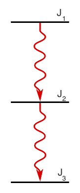

Angular Correlation Calculator
Angular Momentum Options
Even mass
Odd mass
J
1
:
L
1a
/L
1b
Mixing:
J
2
:
L
2a
/L
2b
Mixing:
J
3
:
a
2
:
a
4
:
Warning: Custom values of a2 and a4 set, does not correspond to selected mixing ratios or momenta.
a2/a4 Plot Options
Min. mixing:
Max. mixing:
Mixing Samples:

References
Physics
Clebsch-Gordon Coefficients:
An Effective Algorithm for Calculation of the C.G. Coefficients
, Liang Zuo, et. al. J. Appl. Cryst. (1993). 26, 302-304
Tables of coefficients for angular distribution of gamma rays from aligned nuclei
, T. Yamazaki. Nuclear Data A, 3(1):1-23, 1967.
Software
W(θ) vs cos(θ) plot:
Dygraphs v1.1.1
, Dan Vanderkam
a2 and a4 plots:
Plotly.js 1.1.1
Unit testing:
QUnit 1.19.0
, The jQuery Foundation
CSS:
Twitter Bootstrap v3.3.5
, Twitter